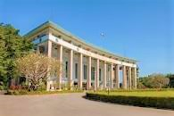

Ministry of Education Yangon Technological University The Seventh International Conference on Science and Engineering 2016 Opening Ceremony
Ministry of Education Yangon Technological University The Seventh International Conference on Science and Engineering 2016 Opening Ceremony Previous